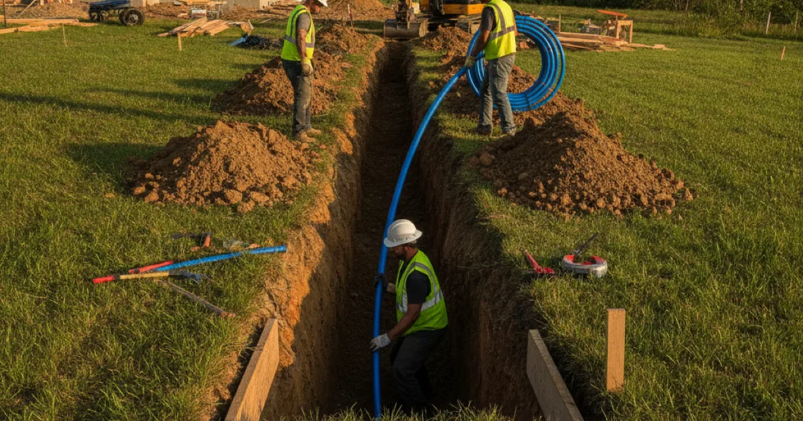
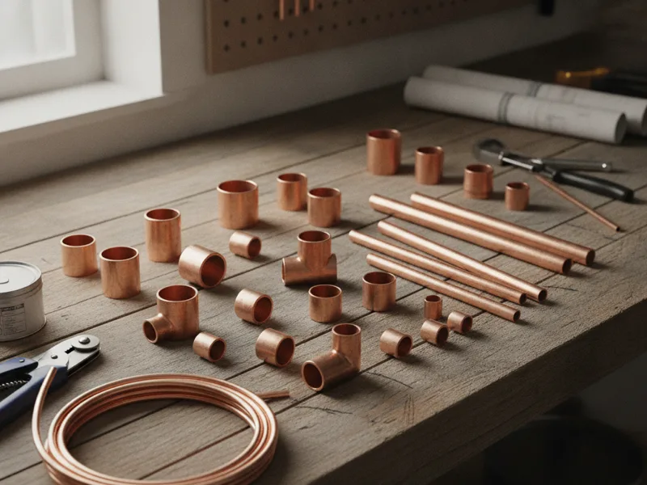

Water Line Replacement in Armonk, NY
Your water line is the one pipe your whole home depends on. When it's old, cracked, or invaded by roots, we replace it correctly the first time.
- Licensed & Insured
- Same-Day Service Available
- Upfront Pricing
- 15+ Years of Experience

How water line replacement works
We start by locating the existing line and confirming where it's failing, whether that's a crack, a collapsed section, or root intrusion. From there, we plan the new line's path, choose durable modern pipe material, and connect it to your home's plumbing and the municipal supply.
Depending on the site, we either dig a trench along the old line's path or use a trenchless method that pulls a new line through with minimal digging. We'll walk you through which approach fits your property before we start, along with a clear price. Once the new line is in, we test water pressure and flow throughout the house to confirm everything's working the way it should.

What affects the cost
- Line length and depth. A longer run from the street to your home, or a deeper line, means more excavation.
- Trenching vs. trenchless method. Trenchless replacement can reduce landscaping disruption but isn't right for every situation.
- What's above the line. Driveways, patios, mature landscaping, or established trees can affect how we access and restore the area.
- Pipe material. The material we install affects both upfront cost and how long it lasts.
- Permitting and municipal connection work. Tying into the municipal supply correctly is part of the job, not an add-on.
We always explain these factors before we give you a number, so there's nothing vague about what you're paying for.
Local factors in Armonk
A lot of established Armonk properties have mature, tree-lined lots, which is part of what makes the area so desirable to live in — and it's also one of the more common reasons a water line eventually needs replacing. Tree roots seek out any source of moisture, and an aging line with even a small crack or loose joint gives them exactly that. Over years, roots can work their way in and severely restrict or block water flow, sometimes long before a homeowner notices anything beyond weaker pressure.
If a camera inspection shows root intrusion or a line that's already partially collapsed, we'll tell you plainly whether a patch will realistically hold or whether replacement is the more honest long-term answer. We're not going to recommend tearing out a line that just needs a targeted repair, but we're also not going to patch something that's going to fail again in a year.
For everything else we offer beyond water lines, take a look at the full list of services we provide.
Repair vs. replace
Not every water line problem means starting over. A single crack or a localized break in an otherwise sound line is often a good candidate for a targeted main-line repair instead of a full replacement. Replacement makes more sense when the line is old, made from outdated material, or showing multiple failure points along its length — root intrusion in more than one spot is a common sign it's time to stop patching.
According to the International Association of Plumbing and Mechanical Officials, water service line materials and installation standards have changed significantly over past decades, which is part of why older lines are more prone to the kind of failures we see. If you're also noticing pressure changes elsewhere in the house, it's worth tracking down a hidden water leak first to rule out a separate issue before committing to line replacement.
When to call a pro
Call us if you're seeing a steady drop in water pressure across the whole house, an unusually high water bill with no clear cause, or a soggy patch in the yard between the street and your home. These are classic signs of a water line that's failing underground, out of sight. Left alone, a cracked line can lead to broader pipe replacement work throughout your home if sediment or debris gets pulled into your plumbing system.
See our full plumbing service list for everything else we handle for Armonk homes.
Frequently asked questions
How do I know if my water line needs to be replaced?
Signs include steady low pressure throughout the house, a rising water bill with no clear explanation, or a wet spot in the yard between the street and your home. We confirm with a camera inspection before recommending replacement.
Will you need to dig up my whole yard?
Not always. Depending on the site and the line's condition, a trenchless method can replace the line with far less digging than a traditional trench. We'll tell you which option fits your property.
Can tree roots really damage a water line?
Yes. Roots are drawn to any moisture leaking from a cracked or loosely joined line, and over time they can restrict flow or cause a full blockage. It's one of the more common causes we see on established, tree-lined properties.
How long does water line replacement take?
Most residential jobs are completed in a day, though the exact timeline depends on the line's length, depth, and whether we're trenching or using a trenchless method.
Will I be without water during the replacement?
We coordinate the shutoff and reconnection to keep the time without water as short as possible, and we'll walk you through the schedule before we start.
Do you handle the permitting for water line work?
Yes, permitting and the municipal connection are part of the job. We handle that so you don't have to navigate it yourself.